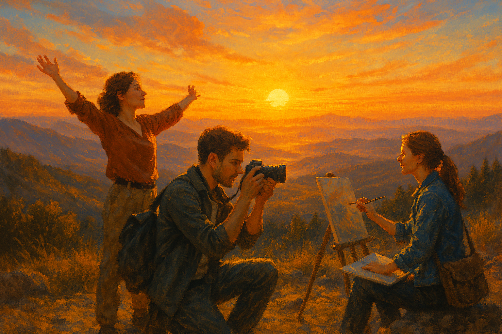

След мистериозните открития в галерията, Елена и Марко бяха се потопили в нови мисли и идеи. Нещо в тяхната връзка беше различно, не само в творческото им партньорство, но и в личната им динамика. Тогава, един ден, тяхната приятелка Анна предложи нещо, което да ги откъсне от обичайната им рутина и да им даде ново вдъхновение – експедиция до местност, известна със своите величествени изгреви и гледки, които наподобяват сцени от живописни картини. "Може би това ще е начинът да намерим нова перспектива", предложи Анна с усмивка. "Затова ви каня да дойдете с мен. Ще вземем камерата и скицниците и ще поемем към върха на тези хълмове. Няма да съжалявате." Тримата се отправиха на път, като всеки носеше своето вътрешно любопитство и вдъхновение. Пътят не беше лек – хълмовете, които водеха към върха, бяха стръмни и каменисти, но усилието беше изпълнено с обещание за нещо прекрасно. Преминавайки през дивата природа, те усещаха, че се отдалечават от обикновения живот и се приближават към място, което щеше да отговори на някои от въпросите, които ги вълнуваха. Когато най-накрая достигнаха върха, гледката, която се разкри пред тях, беше вълнуваща. Изгревът бе точно такъв, какъвто бяха очаквали – златисти и розови нюанси се преливаха в небето, а светлината рисуваше не само пейзажа, но и чувството, че са на прага на нещо ново. Елена се изправи и разпери ръце, като пое дълбоко въздух, пълен със свежест и обещания. Марко започна да заснема моменти с камерата, уловявайки всяка малка промяна в светлината, всеки трептеж на небето и земята. Докато той се концентрираше върху техниката, Елена започна да рисува – скицираше залеза с живописни цветове, които изглеждаха като омагьосани от самата природа. "Това е невероятно", каза тя, без да откъсва поглед от платното. "Как можем да уловим нещо толкова чисто и красиво в обикновените материали, които използваме всеки ден?" Марко се усмихна, докато гледаше как тя рисува с все по-широки движения. „Не знам дали можем, но може би не е нужно да уловим всичко. Трябва просто да го преживеем, да усетим всичко това." Тримата се усамотиха в различни моменти на вдъхновение, като същевременно споделяха тишината, която обгръщаше върха. Всяка минута беше заредена с нова емоция – улавянето на красотата беше само част от приключението. Те започнаха да разбират, че не е важно да споделят всеки момент с другите, а да го споделят помежду си, с единственото изискване – да бъдат истински. Докато денят започваше да се изпълва с топли и златисти цветове, Елена и Марко осъзнаха нещо важно. В тези моменти на тишина и спокойствие, сред тази природна величественост, те не само че откриваха ново вдъхновение за своето творчество, но и нова дълбочина в отношенията си. "Знаеш ли," каза Елена, докато поглеждаше към Марко, "всеки път, когато сме тук, се чувствам като част от нещо по-голямо. Всеки изгрев, всяка гледка, е като ново начало." "И не само това," добави той, като разменяше погледи с нея и с Анна. "Виждаш ли, всяко приключение, независимо колко просто изглежда, всъщност е нещо, което ни свързва още повече. Тези мигове с вас… те са наистина важни." Анна се усмихна и добави: "Природата ни показва, че няма значение колко далеч отиваме, важното е какво носим със себе си, какво споделяме и как ни променя." Тримата се усмихнаха помежду си, като осъзнаха, че най-голямото откритие е не само в пейзажите, които наблюдаваха, но и в отношенията помежду си. Всеки миг, който прекараха заедно, беше важен, не само като вдъхновение, но и като основа на тяхната творческа и лична връзка. Така, в мълчаливото сияние на залеза, те се почувстваха свързани не само със земята, но и с бъдещето, което им предстояло да сътворят. И така, всяко тяхно посещение в галерията ги водеше все по-близо до една неизречена истина, която беше по-голяма и по-сложна от всяко произведение на изкуството, което бяха виждали досега. Тайните на галерията постепенно започваха да се разкриват пред тях, но самата същност на загадката им оставаше неразгадаема. Тя беше нещо, което щеше да ги промени завинаги. 